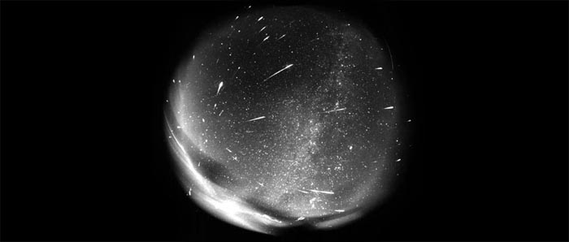

Les météores
On peut observer périodiquement des pluies de météores, la plus connue étant celle des Perséides qui illumine chaque année le ciel nocturne entre le 27 juillet et le 17 août Elles sont produites par des météorides, fragments de roches et poussières gravitant dans l'espace interplanétaire. Quand elles entrent dans notre atmosphère, elles s'embrasent par frottement et restent visibles une fraction de seconde. Les météores peuvent être sporadiques ou se manifester chaque année sous forme de pluie. Ces pluies de météores sont les résidus des queues des comètes. Quand la Terre recoupe l'orbite d'une comète, les débris dispersés par celle-ci lors de son dernier passage s'enflamment. Comme l'intersection de leurs orbites se produit en des points bien définis, une pluie de météores semblera toujours provenir de la même région du ciel : les Perséides de Persée, les Lyrides (en avril) de la Lyre, les Taurides (fin octobre-début novembre) du Taureau. On connaît souvent la comète d'origine. Les Perséides sont les débris de la comète P/SwiftTuttle qui revient dans le système solaire tous les 33 ans.
Source : Étoiles et planètes, Gründ, 1988
Plan du site | Contact | Site réalisé par Mathieu Morainville.